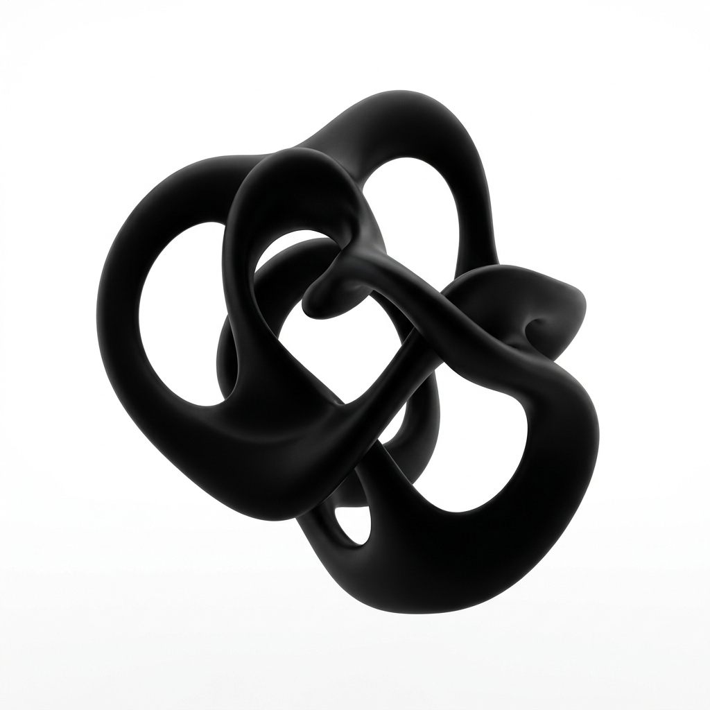
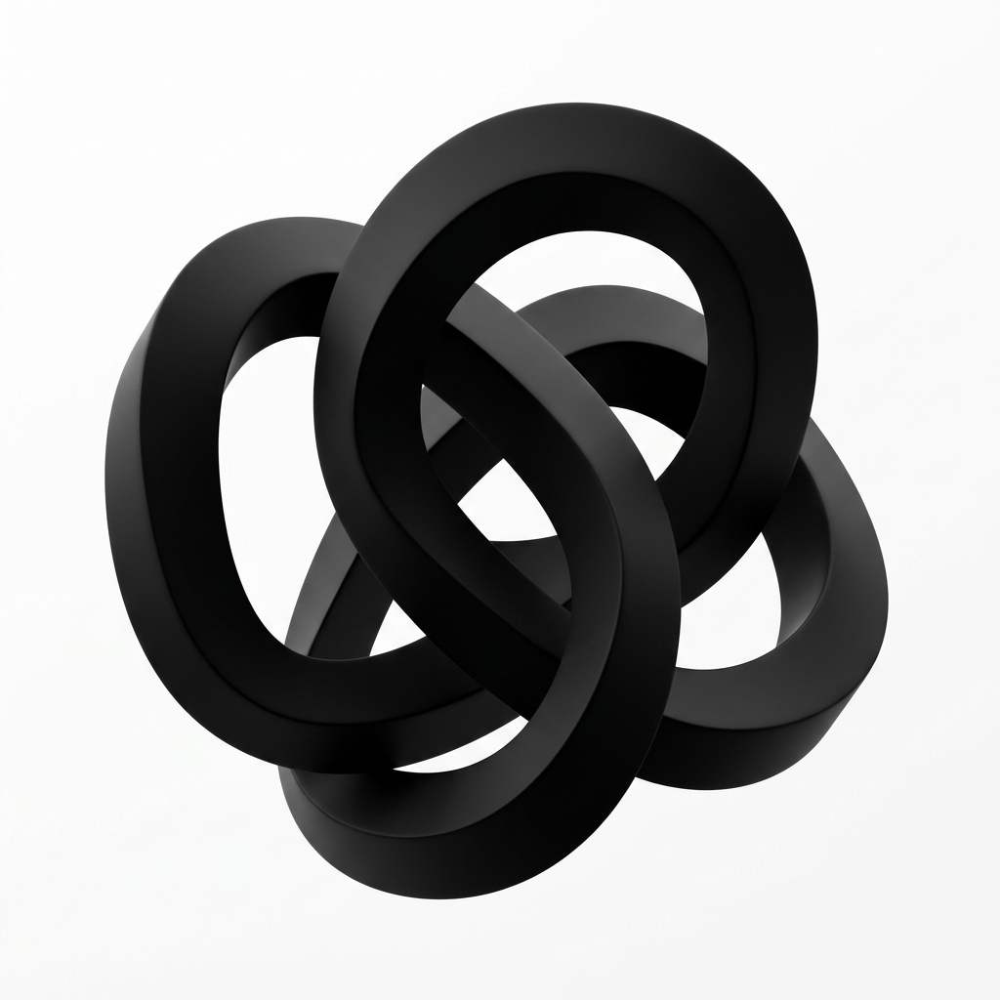

26—PRE
Renaissance Learning
Senior Software Engineer
Led AI-based tool integration. Architected highly scalable cloud-native AWS ETL pipelines processing millions of records securely.

Senior Software Engineer specializing in scalable cloud architecture, backend optimizations, and AI tool integration. I build robust backend infrastructures that accelerate enterprise scale.

C#/.NET, C++, Python, Golang, SQL, JS
AWS (ECS, Lambda), Distributed Systems
LLM Integrations, RAG, Claude Code
Jenkins, GitHub Actions, Docker, Terraform
Led AI-based tool integration. Architected highly scalable cloud-native AWS ETL pipelines processing millions of records securely.
Directed full SDLC of a centralized enterprise API system. Designed and maintained CI/CD pipelines from scratch. Mentored engineering teams.
Enterprise tool suites in C++ and .NET. Introduced foundational DevSecOps practices reducing deployment times in rigorous environments.